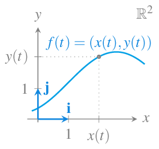
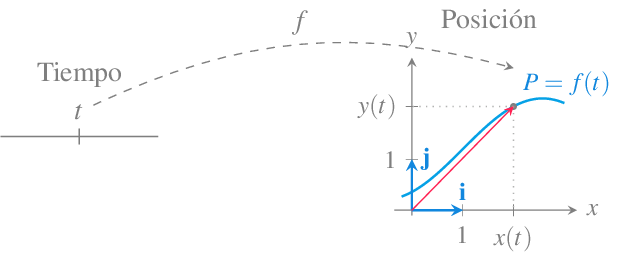
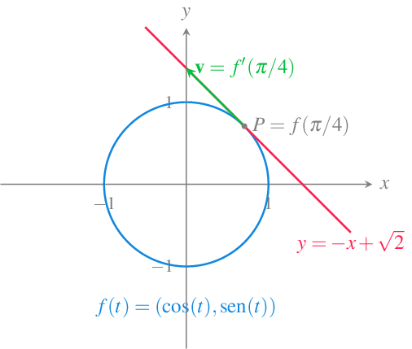

11 Derivadas de funciones vectoriales
\[ \newcommand{\mathbb{N}}{\mathbb{N}} \newcommand{\mathbb{Z}}{\mathbb{Z}} \newcommand{\mathbb{Q}}{\mathbb{Q}} \newcommand{\mathbb{R}}{\mathbb{R}} \newcommand{\mathbb{C}}{\mathbb{C}} \DeclareMathOperator{\Int}{Int} \DeclareMathOperator{\Ext}{Ext} \DeclareMathOperator{\Fr}{Fr} \DeclareMathOperator{\Adh}{Adh} \DeclareMathOperator{\Ac}{Ac} \DeclareMathOperator{\sen}{sen} \]
Hasta ahora hemos estado trabajando con funciones reales de variable real, cuya imagen era un subconjunto de \(\mathbb{R}\), pero muchos fenómenos reales, como por ejemplo el movimiento de un objeto en el espacio, no puede modelizarse mediante este tipo de funciones, puesto que la posición del objeto viene determinada por un vector. Para modelizar este tipo de fenómenos introduciremos en este capítulo un nuevo tipo de funciones que asocian vectores a valores reales y estudiaremos la variación de estas funciones mediante la derivada.
11.1 Funciones vectoriales de una variable real
Definición 11.1 (Función vectorial de una variable real) Una función vectorial de una variable real o campo vectorial de una variable escalar es una función que asocia cada valor escalar \(t\in D\subseteq \mathbb{R}\) con un vector \((x_1(t),\ldots,x_n(t))\) en \(\mathbb{R}^n\):
\[ \begin{array}{rccl} f: & \mathbb{R} & \longrightarrow & \mathbb{R}^n \\ & t & \longrightarrow & (x_1(t),\ldots, x_n(t)) \end{array} \]
donde \(x_i(t)\), \(i=1,\ldots,n\), son funciones reales de una variable real conocidas como funciones coordenadas.
Los campos vectoriales más habituales se dan en plano real \(\mathbb{R}^2\), donde se suelen representar así
\[ f(t) = x(t)\mathbf{i}+y(t)\mathbf{j}, \]
y en el espacio real \(\mathbb{R}^3\), donde ser representan así
\[ f(t) = x(t)\mathbf{i}+y(t)\mathbf{j}+z(t)\mathbf{k}, \]
11.1.1 Representación gráfica de una función vectorial
La representación gráfica de una función vectorial en \(\mathbb{R}^2\) es una trayectoria en el plano real.

La representación gráfica de una función vectorial en \(\mathbb{R}^3\) es una trayectoria en el espacio real.

11.2 Derivada de una función vectorial
El concepto de derivada como límite de la tasa de variación instantánea puede extenderse fácilmente a campos vectoriales.
Definición 11.2 (Derivada de una función vectorial) Se dice que una función vectorial \(f(t)=(x_1(t),\ldots,x_n(t))\) en \(\mathbb{R}^n\) es derivable o diferenciable en un punto \(t=a\) si existe el límite
\[ \lim_{\Delta t\rightarrow 0} \frac{f(a+\Delta t)-f(a)}{\Delta t}. \]
En tal caso, el valor del límite se conoce como derivada del campo vectorial en el punto \(a\) y se representa por \(f'(a)\).
Muchas de las propiedades de las funciones reales de variable real pueden extenderse a las funciones vectoriales de variable real a través de sus componentes. Así, por ejemplo, la derivada de una función vectorial puede obtenerse a partir de las derivadas de sus funciones componentes.
Teorema 11.1 Dada una función vectorial \(f(t)=(x_1(t),\ldots,x_n(t))\) en \(\mathbb{R}^n\), si \(x_i(t)\) es derivable en \(t=a\) para cada \(i=1,\ldots,n\), entonces \(f\) es derivable en \(a\) y su derivada vale
\[ f'(a)=(x_1'(a),\ldots,x_n'(a)) \]
Prueba. La demostración para una función vectorial en \(\mathbb{R}^2\) es fácil:
\[\begin{align*} f'(a) &= \lim_{\Delta t\rightarrow 0} \frac{f(a+\Delta t)-f(a)}{\Delta t} = \lim_{\Delta t\rightarrow 0} \frac{(x(a+\Delta t),y(a+\Delta t))-(x(a),y(a))}{\Delta t} \\ &= \lim_{\Delta t\rightarrow 0} \left(\frac{x(a+\Delta t)-x(a)}{\Delta t},\frac{y(a+\Delta t)-y(a)}{\Delta t}\right) \\ &= \left(\lim_{\Delta t\rightarrow 0}\frac{x(a+\Delta t)-x(a)}{\Delta t},\lim_{\Delta t\rightarrow 0}\frac{y(a+\Delta t)-y(a)}{\Delta t}\right) = (x'(a),y'(a)). \end{align*}\]
Se deja como ejercicio la demostración para espacios de mayor orden.
11.3 Cinemática: Movimiento curvilíneo
La derivada como velocidad a lo largo de una trayectoria en la recta real puede generalizarse a trayectorias en cualquier espacio euclídeo \(\mathbb{R}^n\).
Para el caso del plano real \(\mathbb{R}^2\), si la función vectorial \(f(t)\) describe la posición de un objeto móvil en el plano en el instante \(t\), tomando como referencia el origen de coordenadas \(O\) y los vectores coordenados \(\{\mathbf{i}=(1,0),\mathbf{j}=(0,1)\}\), se puede representar la posición \(P\) del móvil en cada instante \(t\) mediante un vector \(\vec{OP}=x(t)\mathbf{i}+y(t)\mathbf{j}\) cuyas coordenadas
\[ \begin{cases} x=x(t)\newline y=y(t) \end{cases} \quad t\in \mbox{Dom}(f) \]
son las funciones coordenadas de \(f\).

En este contexto, la derivada de la función vectorial \(f'(a)=(x_1'(a),\ldots,x_n'(a))\) es el vector velocidad de la trayectoria descrita por \(f\) en el instante \(t=a\).
No debe confundirse el vector velocidad \(\mathbf{v}=f'(a)\) con la velocidad del móvil dada por \(|\mathbf{v}|\).
Ejemplo 11.1 Dada la función vectorial \(f(t) = (\cos(t),\operatorname{sen}(t))\), \(t\in \mathbb{R}\), cuya trayectoria es la circunferencia unitaria centrada en el origen de coordenadas, sus funciones coordenadas son \(x(t) = \cos(t)\), \(y(t) = \operatorname{sen}(t)\), \(t\in \mathbb{R}\), y su velocidad es
\[ \mathbf{v} = f'(t) = (x'(t),y'(t)) = (-\operatorname{sen}(t), \cos(t)). \]
En el instante \(t=\pi/4\), el móvil estará en la posición \(f(\pi/4) = (\cos(\pi/4),\operatorname{sen}(\pi/4)) =(\sqrt{2}/2,\sqrt{2}/2)\) y se moverá con una velocidad \(\mathbf{v}=f'(\pi/4)=(-\operatorname{sen}(\pi/4),\cos(\pi/4))=(-\sqrt{2}/2,\sqrt{2}/2)\).

Obsérvese que el módulo del vector velocidad siempre será 1 ya que \(|\mathbf{v}|=\sqrt{(-\operatorname{sen}(t))^2+\cos(t)^2}=1\), y por tanto, la velocidad con la que se mueve el móvil es constante.
11.3.1 Recta tangente a una trayectoria en el plano real
Los vectores paralelos a al vector velocidad \(\mathbf{v}\) se denominan vectores tangentes a la trayectoria de \(f\) en el instante \(t=a\), y la recta que pasa por \(P=f(a)\) dirigida por \(\mathbf{v}\) es la recta tangente a \(f\) cuando \(t=a\).
Definición 11.3 (Recta tangente a una trayectoria en el plano real) Dada una función vectorial \(f(t)=(x(t),y(t))\) en el plano real \(\mathbb{R}^2\), se llama recta tangente a la trayectoria de \(f\) en \(t=a\), a la recta de ecuación vectorial
\[\begin{align*} (x(t),y(t)) &= f(a)+tf'(a) = (x(a),y(a))+t(x'(a),y'(a)) \\ & = (x(a)+tx'(a),y(a)+ty'(a)). \end{align*}\]
De la ecuación vectorial de la recta tangente a la trayectoria de \(f\) en \(t=a\), se obtiene que sus funciones cartesianas son
\[ \begin{cases} x(t) = x(a) + tx'(a) \\ y(t)v= y(a) + ty'(a) \end{cases} \quad t\in \mathbb{R}, \]
y despejando \(t\) en ambas ecuaciones e igualando se llega a la ecuación cartesiana de la recta tangente
\[ \frac{x-x(a)}{x'(a)}=\frac{y-y(a)}{y'(a)}, \]
si \(x'(a)\neq 0\) e \(y'(a)\neq 0\).
Desde esta ecuación es fácil pasar a la ecuación en la forma punto-pendiente.
\[ y-y(a)=\frac{y'(a)}{x'(a)}(x-x(a)). \]
Ejemplo 11.2 Hemos visto que para la función vectorial \(f(t) = (\cos(t),\operatorname{sen}(t))\), \(t\in \mathbb{R}\), cuya cuya trayectoria es la circunferencia unitaria centrada en el origen de coordenadas, en el instante \(t=\pi/4\) la posición del móvil era \(f(\pi/4)=(\sqrt{2}/2,\sqrt{2}/2)\) y su velocidad \(\mathbf{v}=(-\sqrt{2}/2,\sqrt{2}/2)\), de modo que la recta tangente a la trayectoria de \(f\) en ese instante es
\[\begin{align*} l: (x(t),y(t)) &= f(\pi/4)+t\mathbf{v} \\ &= \left(\frac{\sqrt{2}}{2},\frac{\sqrt{2}}{2}\right)+t\left(\frac{-\sqrt{2}}{2},\frac{\sqrt{2}}{2}\right) \\ &= \left(\frac{\sqrt{2}}{2}-t\frac{\sqrt{2}}{2},\frac{\sqrt{2}}{2}+t\frac{\sqrt{2}}{2}\right). \end{align*}\]
Su ecuación cartesiana es
\[ \frac{x-\sqrt{2}/2}{-\sqrt{2}/2} = \frac{y-\sqrt{2}/2}{\sqrt{2}/2}\Rightarrow y-\sqrt{2}/2 = \frac{-\sqrt{2}/2}{\sqrt{2}/2}(x-\sqrt{2}/2) \Rightarrow y=-x+\sqrt{2}, \]
y la ecuación punto-pendiente es
\[ y-\sqrt{2}/2 = \frac{-\sqrt{2}/2}{\sqrt{2}/2}(x-\sqrt{2}/2) \Rightarrow y=-x+\sqrt{2}. \]

11.3.2 Recta normal a una trayectoria en el plano real
Como acabamos de ver, la recta tangente a la trayectoria de la función vectorial \(f\) en \(t=a\), está dirigida por el vector velocidad \(\mathbf{v}=f'(a)=(x'(a),y'(a))\). Si en lugar de tomar ese vector se toma como vector director el vector \(\mathbf{w}=(y'(a),-x'(a))\), que es ortogonal a \(\mathbf{v}\), se obtiene otra recta que se conoce como recta normal a la trayectoria.
Definición 11.4 (Recta normal a una trayectoria en el plano real) Dada una función vectorial \(f(t)=(x(t),y(t))\) sobre el plano real \(\mathbb{R}^2\), se llama recta normal a la trayectoria de \(f\) en \(t=a\) a la recta de ecuación
\[ (x(t),y(t)) = (x(a),y(a))+t(y'(a),-x'(a)) = (x(a)+ty'(a),y(a)-tx'(a)). \]
Su ecuación cartesiana es
\[ \frac{x-x(a)}{y'(a)} = \frac{y-y(a)}{-x'(a)}, \]
y su ecuación en la forma punto pendiente
\[ y-y(a) = \frac{-x'(a)}{y'(a)}(x-x(a)). \]
La recta normal es perpendicular a la recta tangente ya que sus vectores directores son ortogonales.
Ejemplo 11.3 Siguiendo con el ejemplo de la trayectoria circular de la función vectorial \(f(t) = (\cos(t),\operatorname{sen}(t))\), \(t\in \mathbb{R}\), la ecuación vectorial de la recta normal en el instante \(t=\pi/4\) es
\[\begin{align*} n: (x(t),y(t)) &= (\cos(\pi/4),\operatorname{sen}(\pi/4)) + t(\cos(\pi/4),\operatorname{sen}(\pi/4)) \\ &= \left(\frac{\sqrt{2}}{2},\frac{\sqrt{2}}{2}\right)+t\left(\frac{\sqrt{2}}{2},\frac{\sqrt{2}}{2}\right) \\ &=\left(\frac{\sqrt{2}}{2}+t\frac{\sqrt{2}}{2},\frac{\sqrt{2}}{2}+t\frac{\sqrt{2}}{2}\right), \end{align*}\]
su ecuación cartesiana es
\[ \frac{x-\sqrt{2}/2}{\sqrt{2}/2} = \frac{y-\sqrt{2}/2}{\sqrt{2}/2}, \]
y la ecuación punto-pendiente
\[ y-\sqrt{2}/2 = \frac{\sqrt{2}/2}{\sqrt{2}/2}(x-\sqrt{2}/2) \Rightarrow y=x. \]

Un caso particular de las rectas tangente y normal a una trayectoria en el plano son la rectas tangente y normal a una función real de una variable real. Si se tiene la función \(y=f(x)\), \(x\in I\subseteq \mathbb{R}\), una función vectorial cuya trayectoria traza la gráfica de \(f\) es
\[ g(x) = (x,f(x)) \quad x\in \mathbb{R}. \]
Su vector velocidad es
\[g'(x) = (1,f'(x)),\]
de manera que la recta tangente a \(g\) en \(t=a\) es
\[ \frac{x-a}{1} = \frac{y-f(a)}{f'(a)} \Rightarrow y-f(a) = f'(a)(x-a), \]
y la recta normal es
\[ \frac{x-a}{f'(a)} = \frac{y-f(a)}{-1} \Rightarrow y-f(a) = \frac{-1}{f'(a)}(x-a), \]
que como se puede comprobar, coinciden con las ecuaciones vistas en.
Ejemplo 11.4 Dada la función \(y=f(x)=x^2\), la función vectorial cuya trayectoria traza la gráfica de esta función es \(g(t)=(t,t^2)\) y su velocidad es \(g'(t)=(1,2t)\), de modo que en el punto \((1,1)\), que se alcanza en el instante \(t=1\), la recta tangente es
\[ \frac{x-1}{1} = \frac{y-1}{2} \Rightarrow y-1 = 2(x-1) \Rightarrow y = 2x-1, \]
y la recta normal es
\[ \frac{x-1}{2} = \frac{y-1}{-1} \Rightarrow y-1 = \frac{-1}{2}(x-1) \Rightarrow y = \frac{-x}{2}+\frac{3}{2}. \]
11.3.3 Recta tangente a una trayectoria en el espacio real
El concepto de recta tangente a una trayectoria en el plano real puede extenderse fácilmente a trayectorias en el espacio real \(\mathbb{R}^3\).
Definición 11.5 (Recta tangente a una trayectoria en el espacio real) Dada una función vectorial \(f(t)=(x(t),y(t),z(t))\) en el espacio real \(\mathbb{R}^3\), se llama recta tangente a la trayectoria de \(f\) en \(t=a\), a la recta de ecuación vectorial
\[\begin{align*} (x(t), y(t), z(t)) &= f(a)+tf'(a) = (x(a), y(a), z(a)) + t(x'(a), y'(a), z'(a)) \\ & = (x(a)+tx'(a), y(a)+ty'(a), z(a)+tz(a)). \end{align*}\]
Sus ecuaciones cartesianas son
\[ \frac{x-x(a)}{x'(a)}=\frac{y-y(a)}{y'(a)}=\frac{z-z(a)}{z'(a)}, \]
siempre que \(x'(a)\neq 0\), \(y'(a)\neq 0\) y \(z'(a)\neq 0\).
Ejemplo 11.5 Dada la función vectorial \(f(t)=(\cos t, \operatorname{sen}(t), t)\), \(t\in \mathbb{R}\) en el espacio real, en el instante \(t=\pi/2\), la trayectoria pasará por el punto
\[ f(\pi/2)=(\cos(\pi/2),\sin(\pi/2),\pi/2)=(0,1,\pi/2), \]
con vector velocidad
\[ \mathbf{v}=f'(\pi/2)=(-\sin(\pi/2),\cos(\pi/2), 1)=(-1,0,1), \]
y la recta tangente a la trayectoria de \(f\) en ese instante es
\[ (x(t),y(t),z(t))=(0,1,\pi/2)+t(-1,0,1) = (-t,1,t+\pi/2). \]

11.3.4 Normal plane to a trajectory in the space
En el espacio tridimensional \(\mathbb{R}^3\), la recta normal a una trayectoria no es única, sino que hay infinitas, todas ellas en el mismo plano, por lo que en vez de hablar de recta normal a la trayectoria, se habla de plano normal a la trayectoria.
Si \(f(t)=(x(t),y(t),z(t))\), \(t\in \mathbb{R}\), is una función vectorial en el espacio real \(\mathbb{R}^3\), en el instante \(t=a\), el móvil que sigue la trayectoria de \(f\) estará en la posición \(P=(x(a),y(a),z(a))\) con vector velocidad \(\mathbf{v}=f'(t)=(x'(t),y'(t),z'(t))\). Así, tomando el vector velocidad como ortogonal al plano, cualquier vector del plano normal será ortogonal al vector velocidad, por lo que su producto escalar será nulo, de lo que se deduce la siguiente ecuación
\[ \begin{gathered} (x-x(a),y-y(a),z-z(a))(x'(a),y'(a),z'(a)) = 0 \\ \Leftrightarrow x'(a)(x-x(a))+y'(a)(y-y(a))+z'(a)(z-z(a))=0. \end{gathered} \]
Definición 11.6 (Plano normal a una trayectoria en el espacio real) Dada una función vectorial \(f(t)=(x(t),y(t),z(t))\) en el espacio real \(\mathbb{R}^3\), se llama plano normal a la trayectoria de \(f\) en \(t=a\), al plano de ecuación
\[ x'(a)(x-x(a))+y'(a)(y-y(a))+z'(a)(z-z(a))=0. \]
Ejemplo 11.6 Para la trayectoria de la función vectorial del ejemplo anterior \(f(t)=(\cos t, \sin t, t)\), \(t\in \mathbb{R}\), en el instante \(t=\pi/2\) la trayectoria pasa por el punto
\[ f(\pi/2)=(\cos(\pi/2),\sin(\pi/2),\pi/2)=(0,1,\pi/2), \]
con vector velocidad
\[ \mathbf{v}=f'(\pi/2)=(-\sin(\pi/2),\cos(\pi/2), 1)=(-1,0,1), \]
y el plano normal a la trayectoria de \(f\) en ese instante tiene ecuación
\[ \left(x-0,y-1,z-\frac{\pi}{2}\right)(-1,0,1) =0 \Leftrightarrow -x+z-\frac{\pi}{2}=0. \]